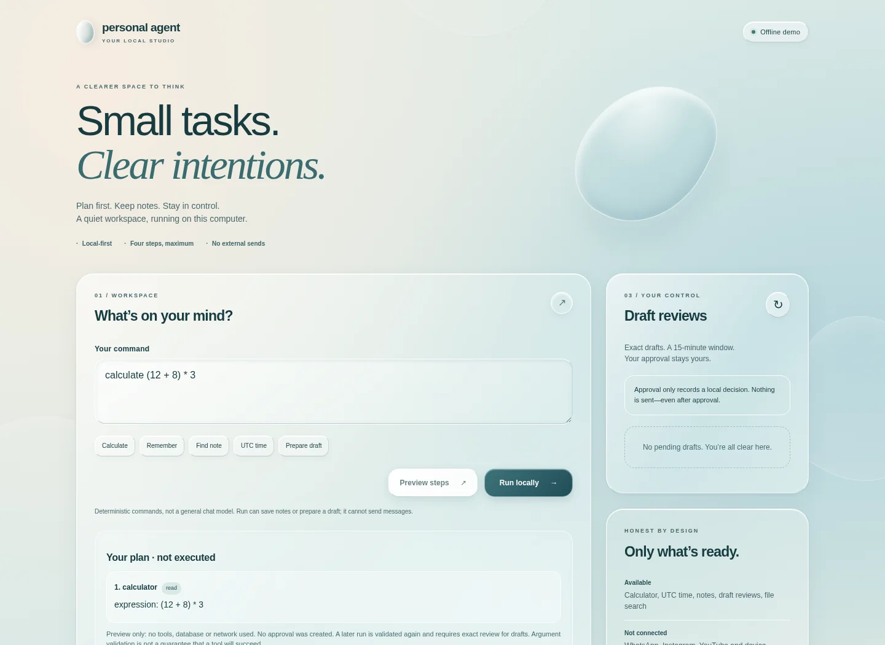

Personal-agentic-ai
Local-first AI work, including a standalone 3D Android orb.
A local-first assistant starter for bounded task preparation, private notes and owner-reviewed drafts. Its Android source now includes a standalone 3D WebGL home-orb component.
All published Personal AI APKs (28)
The current stable APK is v1.27.54.01-build28 (versionName 1.27.54.01, versionCode 28), for ARM64 direct installation (not Google Play). Published SHA-256: eff8a412cc786662837484d72921c7b3267eb69eccd0787d647bbd36aeabe1ce. Local Gemma chat remains experimental; Redmi 24090RA29I/HyperOS installation is unverified. Indic-Speak offline voice generation is not implemented; Android TTS and optional ElevenLabs are separate. Other links are official GitHub release APKs; prereleases include development, test and debug builds.
Stable release
Other GitHub release builds (not marked prerelease)
- v1.23.07.01-build27 (versionCode 27) — previous stable ARM64 APK · SHA-256 236f7789aa624ab8a8600b444c16f50dc165fa1e774fdcdd1b6d37ba0cf2d83d ↗ (opens in a new tab)
- v1.23.07.01-build26 (versionCode 26) — previous stable ARM64 APK · SHA-256 6734dc84192499658c2c974f7db046557294ce17e1d4badddd79a92219b134a0 ↗ (opens in a new tab)
- v1.00.00.0000.0-build25 (versionCode 25) — older stable ARM64 APK · SHA-256 ae0c60bae59c603a67895ed14dfe52f0e82d9e765b8467810fd05f2505b15b30 ↗ (opens in a new tab)
- v1.00.00.0000.0-build24 (versionCode 24) — previous stable ARM64 APK ↗ (opens in a new tab)
- v1.00.00.0000.0-build23 (versionCode 23) — previous stable ARM64 APK ↗ (opens in a new tab)
- v1.00.00.0000.0-build22 (versionCode 22) — previous stable ARM64 APK ↗ (opens in a new tab)
- v1.00.00.0000.0-build21 (versionCode 21) — previous stable ARM64 APK ↗ (opens in a new tab)
- v1.00.00.0000.0-build20 (versionCode 20) — previous stable ARM64 APK ↗ (opens in a new tab)
- v1.00.00.0000.0-build19 (versionCode 19) — previous stable ARM64 APK ↗ (opens in a new tab)
- v1.00.00.0000.0-build18 — previous stable APK (versionCode 18) ↗ (opens in a new tab)
- v0.3.0-build17 — GitHub release APK ↗ (opens in a new tab)
- v0.3.0-build16 — GitHub release APK ↗ (opens in a new tab)
- v0.3.0-build15 — GitHub release APK ↗ (opens in a new tab)
GitHub prereleases (development, test or debug)
- Android 16 emulator debug APK · main ccead19 · run 40797950237 · SHA-256 b7bbcb29ce47e34c3b5428269e13ed80b623122f61efead65332011b40376d5a ↗ (opens in a new tab)
- Android 16 emulator debug APK · PR #46 7bc123e · prior run 40807327798 · SHA-256 50768f1cc0ac062c1393dab1c564e12bbe1e4556dd2515ce43078a29248ae5c4 ↗ (opens in a new tab)
- Android 16 emulator debug APK · PR #53 a862fa9 · run 40807467202 · SHA-256 ab7c4cdcf473df528a80362fb1742da83eb35544760a95b9fd7d9edbf54d47e0 ↗ (opens in a new tab)
- v0.3.0-ui-reference-redesign-test — debug/test APK ↗ (opens in a new tab)
- v0.3.0-build9 — prerelease APK ↗ (opens in a new tab)
- v0.3.0-build8 — prerelease APK ↗ (opens in a new tab)
- v0.3.0-build7 — prerelease APK ↗ (opens in a new tab)
- v0.3.0-build15-debug-test — debug/test APK ↗ (opens in a new tab)
- v0.3.0-build14 — prerelease APK ↗ (opens in a new tab)
- v0.3.0-build13 — prerelease APK ↗ (opens in a new tab)
- v0.3.0-build12 — prerelease APK ↗ (opens in a new tab)
- v0.3.0-build11 — prerelease APK ↗ (opens in a new tab)
- v0.3.0-build10 — prerelease APK ↗ (opens in a new tab)
- v0.1.0-android-test — debug/test APK ↗ (opens in a new tab)
Inside the build
- The problem
- Everyday tasks need useful preparation without quietly sending messages or taking consequential actions.
- What I built
- A Python planner with validated tool steps, SQLite memory, deterministic local commands and exact draft reviews. The local web studio makes those boundaries visible. Development main adds paginated notebook browsing, Unicode-aware literal note search and notes-only JSONL export, plus a Flutter/Dart Android app with a local notebook and editable flashcard decks, a due-review queue and deterministic Again/Hard/Good/Easy intervals. Cards are user-authored, not AI-generated. The Android source also includes a standalone Flutter widget embedding a bundled WebGL 3D scene: a rotating orbital core, rings, branching neural filaments and moving pulses, with Adaptive, Ultra detail and Battery quality modes plus a neural-light toggle. It is local decorative art, restricted to the bundled page with no JavaScript bridge; it does not show AI activity or connect to a model. Main-branch Android source also adds finite progress notifications for user-started active chat requests; this is not a background service or an Android 16 Live Update. The current main branch also adds a camera-flashlight shutoff request behind a separate Android confirmation, and a WhatsApp draft handoff that shows the exact recipient and message for review before opening WhatsApp; the app does not send the message. Main also adds a tap-started clipboard excerpt flow: it shows a plain-text excerpt for review and adds it as quoted, untrusted text to the editable chat draft without sending. The latest main update adds an opt-in, Xiaomi/HyperOS 3-gated Super Island adapter for task-status notifications, retaining the ordinary Android notification fallback.
- Technologies
- Python standard library · SQLite · Flutter/Dart · Android/Kotlin and Java · Flutter WebView · WebGL · vanilla HTML/CSS/JavaScript
- Engineering takeaway
- A preview is not permission. Validating a plan again before execution and invalidating changed approvals are explicit design boundaries in the code. The orb is clearly labeled as decorative art, separate from AI activity.
- What’s still ahead
- An earlier flashcard verification passed 27 Flutter tests and both hosted API36 native integration tests, including local study-record persistence across reload and restart. Android 16 CI run 39923508217 passed on main commit 424287b6d0783839955b12b726b1c44bd011d1de: Flutter checks, Rust native search checks, API36 instrumented local-first checks and Evidence. The public v0.3.0-build17 APK release is built from main commit 01d4fa1f5d9e46339bd30583bd0c663a502c2cc3. Android APK signature verification passed (v2); its published SHA-256, 4bc03d55cb0ef658f7c5861ba70557870c97421c582c3a91cba70680bc48d1c7, matches the downloaded 68.7 MB APK. The release workflow’s Gitleaks scan of strings extracted from that signed APK found no leaks. It is a direct-install APK, not a Play Store listing. Installation on Redmi 24090RA29I/HyperOS remains unverified. The orb remains a standalone source component, not wired into the app screen; it is decorative and does not connect to a model. These checks do not establish physical Redmi/HyperOS installation or model inference; Indic-Speak integration and qualification were not assessed. No message sending or connected social accounts. The web studio needs a local Python server. The study cards do not generate lessons or estimate mastery. Existing Python releases do not include the Android additions; JSONL exports are plaintext, not encrypted backups. The previous stable Android release was v1.00.00.0000.0 (build 18, versionCode 18); its Android 16 CI, Flutter and Rust checks, APK signing and integrity verification, and source/APK secret scans passed. Published APK SHA-256: a4161dbdcfec6097f824b9bb81de2284636b279da96aad2bafcc1ecf9269d202. It was a direct-install release, not a Play Store listing; Redmi 24090RA29I/HyperOS installation and runtime remained unverified, and Indic-Speak offline voice generation is not included. The previous stable release was v1.00.00.0000.0-build19 (versionCode 19), built from main commit 83708a98d72067ccc7b1e838f37b64e2482b4fe5 and signed with the configured Android release key. Its 72,233,902-byte ARM64 APK was a direct install, not a Play Store listing; published SHA-256: 6876b8fda399c480317913f07cb62019f6c588166dcc2145cd7e20d6f7989084. Build 21 (versionCode 21) was a previous stable release. The previous stable release was v1.00.00.0000.0-build24 (versionCode 24), published 24 October 2026 and built from main commit 5b57968dcaf2f0f393816ba630db26e6060e48a3, signed with the configured Android release key. Its 76,539,207-byte ARM64 APK was for direct installation, not a Play Store listing; published SHA-256: a04cd9db73483cd3ae90c2803fc9b7b0ca9d0321e5dc8efd69c943c72e524380. The release notes said the LiteRT-LM JNI callback keep-rule was included; local Gemma chat remained experimental, and Redmi 24090RA29I/HyperOS installation and runtime were unverified. Indic-Speak offline voice generation was not implemented; existing Android TTS and optional ElevenLabs are separate features, not an Indic-Speak replacement. The previous stable release was v1.00.00.0000.0-build25 (versionCode 25), published 25 October 2026 and built from main commit ae4d42703044973d0bdaef7244f537a090b9910f, signed with the configured Android release key. Its 76,687,171-byte ARM64 APK is for direct installation, not a Google Play listing; published SHA-256: ae0c60bae59c603a67895ed14dfe52f0e82d9e765b8467810fd05f2505b15b30. The release notes say the LiteRT-LM JNI callback keep-rule is included; local Gemma chat remains experimental, and Redmi 24090RA29I/HyperOS installation and runtime remain unverified. Indic-Speak offline voice generation is not implemented; existing Android TTS and optional ElevenLabs are separate features, not an Indic-Speak replacement. The main commit changes only the study-whiteboard test default for compatibility; it does not establish device compatibility or model qualification. Offline Qwen replies remain unqualified (`chat_qualified=false`), and Redmi/HyperOS installation and runtime remain unverified. Main commit 8e515b2 adds the active-chat progress tracker and Flutter/Kotlin unit tests. Android 16 CI run 40191147577 passed on main commit 8e515b2; at that point, this main-branch change was not included in stable build24, so the check did not establish released-APK behavior. After this release, API 36 CI run 40162187143 passed on main commit 162f233, which corrected only the expected Gemma offline-status text. At that point, this main-only test fix was not included in build24 and did not qualify Qwen or Gemma chat; Redmi/HyperOS behavior remains unverified. The previous stable release was v1.23.07.01-build26 (versionCode 26), published 25 October 2026 and built from main commit f76d3a168fd2c12a5d6c15d50614fb192e937041, signed with the configured Android release key. Its 77,081,783-byte ARM64 APK was for direct installation, not a Google Play listing; published SHA-256: 6734dc84192499658c2c974f7db046557294ce17e1d4badddd79a92219b134a0. The release notes said Redmi 24090RA29I/HyperOS installation had not been physically verified, local Gemma chat remained experimental, and Indic-Speak offline voice generation was not implemented; Android TTS and optional ElevenLabs are separate features. The previous stable release was v1.23.07.01-build27 (versionCode 27), published 26 October 2026 and built from main commit ef3606504d16b955183e14cc1fec3d35466945d4, signed with the configured Android release key. Its 77,081,983-byte ARM64 APK was for direct installation, not a Google Play listing; published SHA-256: 236f7789aa624ab8a8600b444c16f50dc165fa1e774fdcdd1b6d37ba0cf2d83d. The release notes said Redmi 24090RA29I/HyperOS installation had not been physically verified, local Gemma chat remained experimental, and Indic-Speak offline voice generation was not implemented. The latest published stable release is v1.27.54.01-build28 (versionName 1.27.54.01, versionCode 28), published 26 October 2026 and built from main commit cf00445d027ab4d9265729f13f30bc27b4146525, signed with the configured Android release key. Its 77,081,971-byte ARM64 APK is for direct installation, not a Google Play listing; published SHA-256: eff8a412cc786662837484d72921c7b3267eb69eccd0787d647bbd36aeabe1ce. GitHub’s Signed Android APK release run 40388591666 and Android16 phone-preview qualification run 40388547501 completed successfully on that source commit; this does not establish physical installation on Redmi 24090RA29I. The release notes say Redmi/HyperOS installation has not been physically verified, local Gemma chat remains experimental, and Indic-Speak offline voice generation is not implemented; Android TTS and optional ElevenLabs are separate features. On 28 October 2026, public main commit 54a14fb adds the confirmation-gated flashlight-off request and recipient-reviewed WhatsApp draft handoff. Local Flutter checks, 32 Android unit tests and APK assembly were reported passing for this source snapshot; Android 16 CI run 40629517719 for this main commit completed successfully (the android16 job passed). This CI result does not establish physical-device behavior. Physical-device behavior remains unverified. PR #40 was merged to main on 28 October as 9e14a50. It adds retention of the exact debug APK produced by the API 36 emulator checks in the workflow evidence artifact, with the run ID and commit prefix in the filename and the full run ID, commit SHA, artifact filename and APK SHA-256 in build-metadata.txt (or an explicit no-APK record). The PR’s android16 check passed. This is CI artifact evidence, not a new published APK release, and does not establish physical-device installation or behavior. The latest public main commit is ccead198 (29 October), merging PR #55’s gated HyperOS Super Island task updates; its Android 16 check passed, but HyperOS device rendering remains unverified and the public-build opt-in is off. On 29 October, three exact x86_64 Android 16 emulator debug APKs were published as prereleases from successful runs: main commit ccead19 (run 40797950237), PR #46 commit 7bc123e (run 40807327798), and PR #53 commit a862fa9 (run 40807467202); their downloads are listed below. A later rerun for PR #46, run 40818586236 on the same commit, failed at API36 instrumented local-first checks with exit code 1, so its latest Android 16 result is failing despite the earlier passing run. PR #53’s later run 40818606701 passed. Both PRs remain open and unmerged. These emulator debug artifacts are not production-signed or Redmi ARM64 releases; stable build28 remains the latest stable APK.
Based on repository snapshot ccead19 ↗ (opens in a new tab), checked 29 October 2026. Takeaways describe the implementation, not a claimed personal lesson.